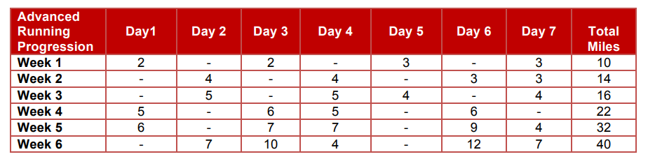

Yesterday I completed a 9 mile run with minimal symptoms and decided I was recovered enough to share some reflections on what got me back to real running after a course of run/walk.
It has been 12 weeks since my previous post about returning to running with IT band syndrome. At that time, I had just completed a run/walk workout that consisted of 18 total running minutes and I imagined I was only a week or two away from continuous running and starting to build up to more than 5-10 miles per week. I was buoyed by optimism, but it would actually be 7 more weeks of run/walk intervals 2-3 times per week before I would successfully complete a nonstop 30 minute run.
First, I set some rules
ITBS is an inflammatory condition and a positive feedback loop - the more irritated the area is, the less tolerant it will be of poor quality movement, so it takes less insult to prolong the injury. Inflammation management during return to run is critical. I set a rule for myself that the day before a planned run should be basically symptom-free, otherwise I need to wait another day. I iced after every run and applied Diclofenac/Voltaren gel to the side of my knee in the morning before runs, after showers, and at the end of the day.
From run/walk to continuous running
I followed the return to run protocol from McKay et al. 2020 that I shared in my previous post, but I found the jump to continuous running at the end of the protocol pretty difficult to execute in one step. Instead, after completing 4.5 minutes running, 30 seconds walking (repeated 6x), I spent a total of 6 weeks running about 30-35 minutes total every other day or every couple of days - adding an extra rest day if I woke up on a planned “run” day with any lingering irritation - with runs broken up into longer intervals than the McKay plan contains before the 30 minute continuous run. For example, I had a run of 5 x 6min run intervals with a minute or two walking as needed to avoid stretches of road containing noticeable descents or left turns (my ITBS is on my left leg). I built the run segments up to 10 minutes running x 3, and then 15 minutes x 2, and then tried running continuously after doing that a few times. This may have been more prolonged than necessary in terms of endurance, but I found the walk interval(s) nice for checking in with how my knee was feeling and for a pace reset if I was running too fast.
From continuous running to consecutive run days
After I was able to run continuously, I continued to run every other day or every couple of days for 4 weeks before attempting consecutive run days. I had started to notice that I was feeling basically normal later in the day on run days and I decided I was ready to try back-to-back run days. For scheduling, I followed the structure outlined in Ohio State University’s Advanced Return to Running protocol (link), specifically this part:

I did not follow the mileage prescribed in this plan, because with the amount of time I had taken off at this point this rate of build-up was not appropriate for me, but it may be a good fit for someone who took fewer weeks/months off running. What I did value is seeing the patterning of consecutive run days. Starting in the third week of continuous running, there is a pair of back-to-back runs, followed by every other day running for two runs, another pair of consecutive runs, and then two more every other day runs, before switching to two days on / 1 day off, and finally ramping up to three consecutive days. I have now had three weeks with a pair of consecutive run days, and am looking forward to moving up to repeated two days on / 1 day off soon.
What about all of those weird strategies I tried…?
Early in my recovery, I shared a number of unconventional IT band strategies that I had found in my obsessive search for a magical cure. Some of these gave me relief but it was temporary and I don’t continue to use any of these strategies. However, also linked in the strategies post are links to E3 Rehab and Squat University’s pages about IT band syndrome, and these were valuable to me. The Squat U video is where I realized my single-leg deadlift form needed some work, and E3 Rehab is a comprehensive source of information about this and other injuries.
What about new strategies / what ultimately helped?
I don’t think one week has passed in my entire 6 month ITBS experience without me trying some new stretch or strength move that I believed might be ~the thing~ that changes everything. I do think trying things helped keep me optimistic. Since I have ultimately gotten better, I don’t know if what I’m doing now actually helped or if it was just coincidental.
I stopped doing Bulgarian split squats. These are supposed to be an amazing move for runners and prior to me getting hurt, they were the only exercise I was doing for glute strength. However, I don’t think I was performing them well and I suspect I was overly relying on my quads. I recently heard a physical therapist say that for every 1 quad-focused exercise you do, you should do 2 posterior chain exercises to balance it out. I don’t know anything else about this advice but I do know that I wasn’t following it.
Instead of the split squats, I started doing single-leg deadlifts and airplane deadlifts. My hamstrings got very flexible and strong. I started to notice that when I pick something off the floor I can hinge almost enough to touch the ground. I have a history of hamstring strains so this was a welcome improvement, ITBS aside.
I started regularly attacking my TFL with a massage gun. I could never figure out the ITB/TFL stretches - I could get into position but I wasn’t sure what I was supposed to feel. But if you put a massage gun on your TFL, you’ll know you’re on it because you can feel your IT band vibrating distally on the side of the knee.
I started working on hip mobility, and specifically hip internal rotation. Not knowing much about “internal rotation”, I feared it early in my ITBS after reading that ITBS can result from too much/uncontrolled knee rotation inward, which I thought was the same thing. When I tried the hip 90/90 mobility drill, my left (ITBS) hip was very uncomfortable when it was in the internally rotated position. My hip felt jammed up like something was going to break if I tried to stretch or sink into the position. I decided with nothing to lose I was going to work on this limitation, mostly by holding the position for a few minutes at a time, and gradually it got easier and less uncomfortable. I also started doing this posterior hip capsule stretch. I don’t know if any of this is related to my ITBS improvement or merely coincidental.
Later update to the update (July 2025): I picked up a copy of Jay Dicharry’s Running Rewired and started doing the Foam Roller Drill (pg. 88) (also on Youtube). I knew this one was going to make a difference as soon as I tried it because it felt pretty different between my left and right sides and was more challenging on my ITBS side.